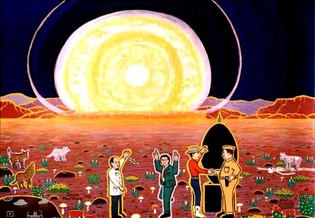

The first atomic explosion was the Trinity Test in the Jornado del Muerto desert of New Mexico on July 16, 1945. This test demonstrated that when plutonium is squeezed beyond a critical mass, it will begin a chain reaction of fast neutrons that will split more and more plutonium atoms until the resulting fireball is hotter than the sun. The military version of this idea, the Fat Man bomb, was dropped on Nagasaki, Japan on August 9, 1945. The first atomic bomb used in war, the Little Boy, was a uranium core bomb dropped on Hiroshima, Japan on August 6, 1945 .
Enrico Fermi, shown in a white lab coat, calculated the power of the explosion by dropping small bits of paper and measuring how far the blast wave carried them. He was one of many Nobel Prize winners who came to the United States as refugees from Nazi persecution.
Leo Szilard, wearing a green suit, extends one finger of his right hand and two fingers of the other hand to illustrate his theory about nuclear chain reactions. He was the first to push the government to finance the research and development of atomic power, but he also was the first to oppose dropping the bomb on civilians. Szilard and Fermi finished the first self-sustaining atomic reactor on December 2, 1942.
J. Robert Oppenheimer, in boots and blue jeans, led an international team of scientists to translate the ideas of theoretical physics into a working bomb. He was the head of the civilians working for the Manhattan Project, the program to develop atomic bombs for the U. S. Army.
General Leslie Groves, the military leader of the project, had the political backing and the relentless drive necessary to command top priority for the bomb. He spent billions of dollars and directed thousands of workers at a day and night pace to finish an atomic bomb before the war ended.
Many people think that the atomic attacks on Hiroshima and Nagasaki made the Japanese surrender, and that there is no moral difference between shooting a cannon and dropping an atomic bomb. Many others are just as convinced that the Japanese were already trying to surrender, and that it was unethical and unnecessary to use these bombs against cities.
David B. Martinez © 1994